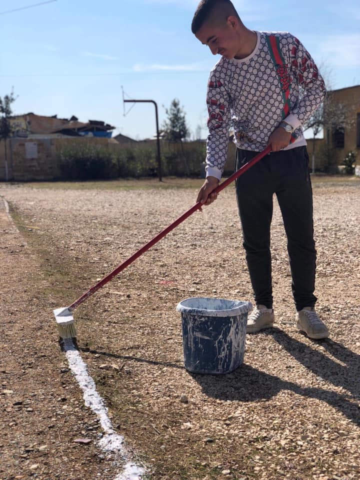
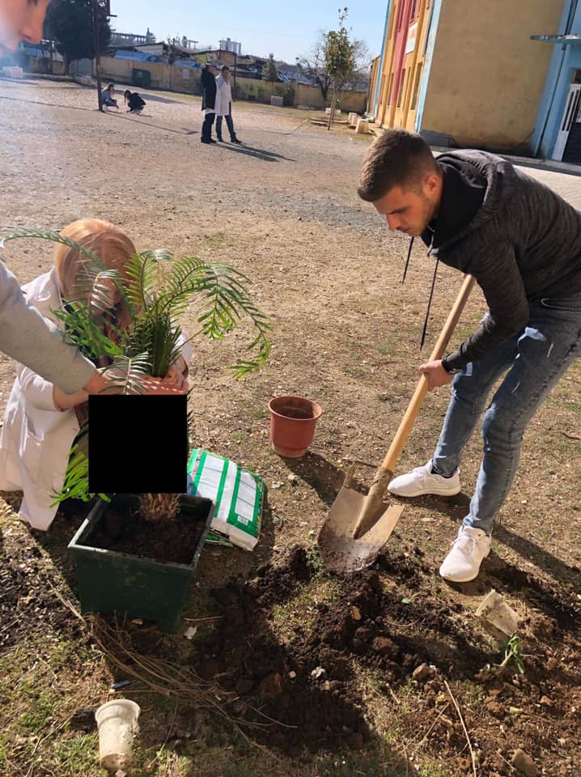
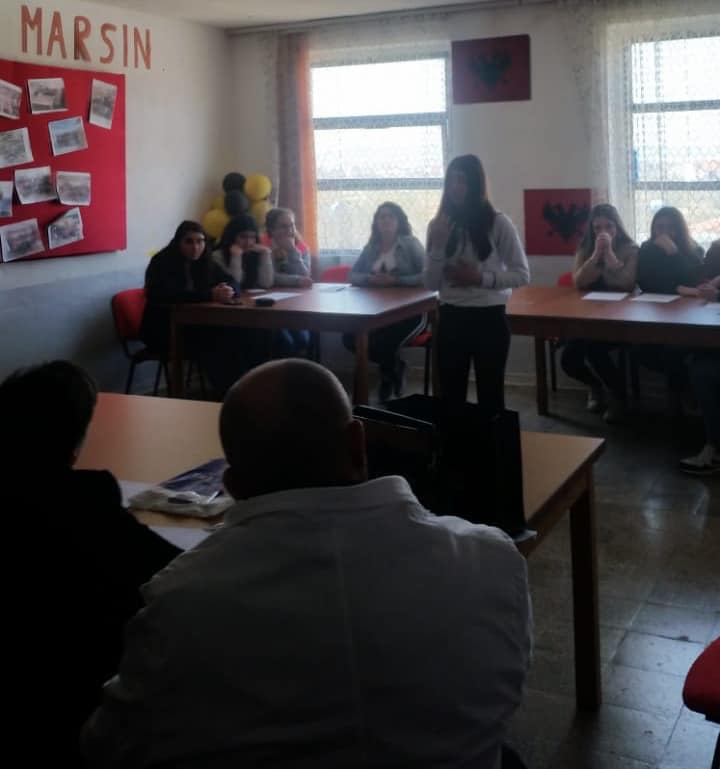
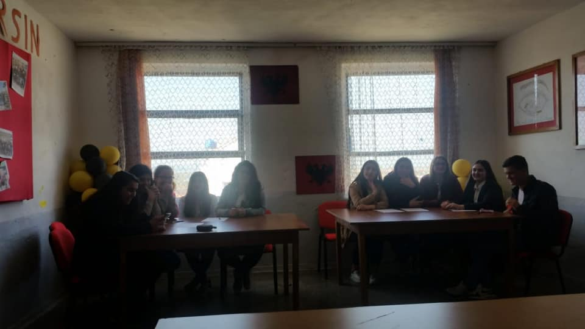
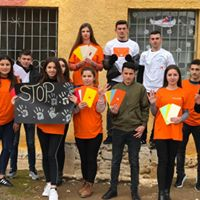
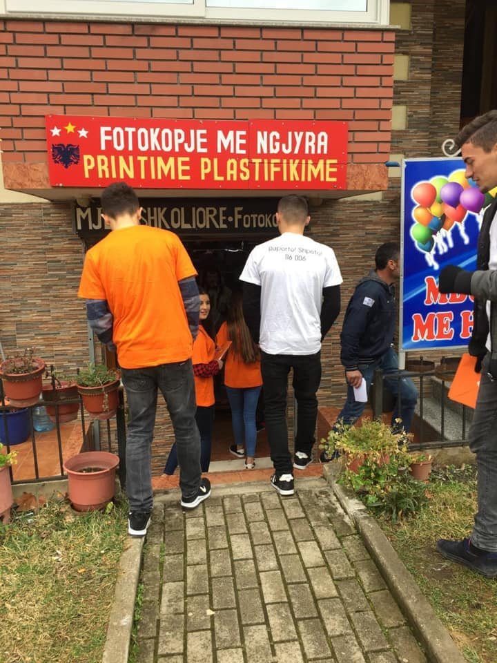
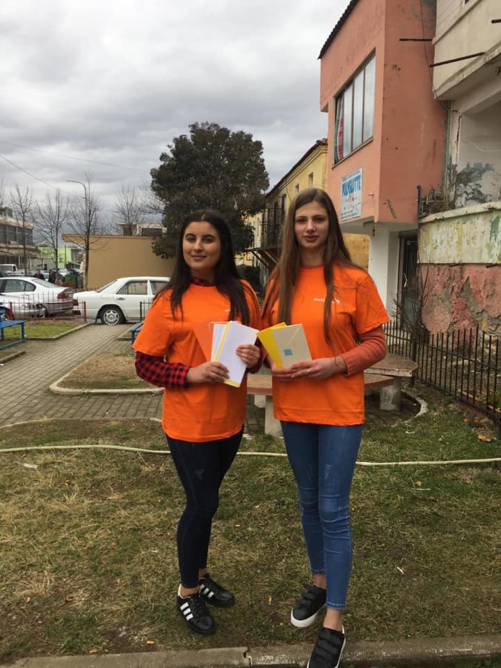

Arif Halil Sulaj
Nisma Krijo O2-in tend
Nisma #KrijoO2tend filloi me gjelbërimin e ambjenteve të brendshme dhe të jashtme të shkollës. Punë shumë e mirë e nxënësve 👏 nën përkujdesjen e mësueses së biologjisë Resmie Sala.



Konkursi i letersise
Konkursi i letërsisë ndërmjet klasës XII D dhe XII F. Një orë argëtuese, një garë e bukur e organizuar me seriozitet e përkushtim nga mësuesja Vedita Maxharri. Falenderojmë nxënësit që na dhuruan shumë kënaqësi. Urime fituesve të XII F!


Parandalimi i dhunes
Vijojnë aktivitetet në kuadër të fushatës për parandalimin e dhunës dhe ekstremizmit, për një shoqëri dhe jetë më të sigurt. Sensibilizimi i komunitetit ishte fokusi i punës së nxënësve tanë sot. I falenderojmë për angazhimin e tyre. Falenderojmë mbi të gjitha qytetarët për bashkëpunimin!


